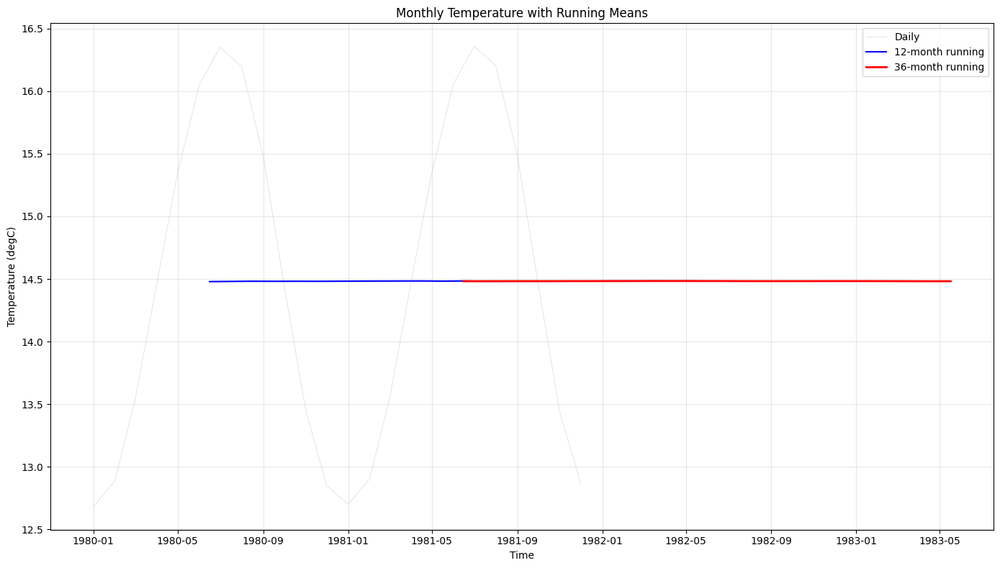
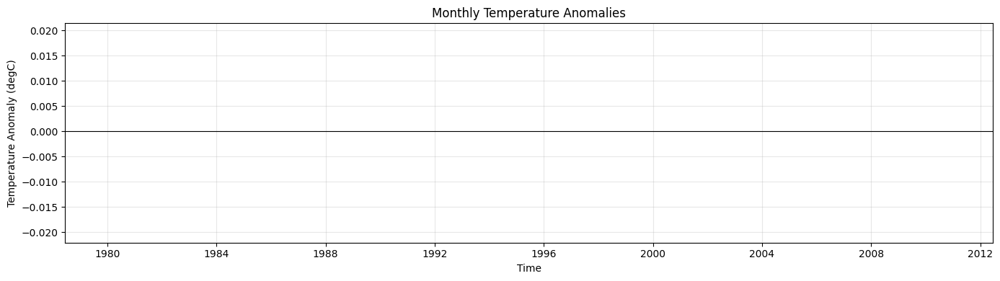

Temporal Analysis with CDO#
Analyzing Climate Data Across Time#
CDO provides powerful operators for temporal aggregation and analysis. This notebook demonstrates how to compute monthly, seasonal, and annual means, calculate climatologies, and detect anomalies.
Learning Objectives:#
Compute temporal means at various scales (monthly, seasonal, annual)
Calculate climatologies and anomalies
Apply running means for smoothing
Visualize temporal patterns in climate data
import subprocess
import xarray as xr
import numpy as np
import matplotlib.pyplot as plt
import os
# CDO is installed as cdo.cmd on Windows; use the right executable name.
CDO = 'cdo.cmd' if os.name == 'nt' else 'cdo'
# Use a real monthly temperature time series from NCEP/DOE Reanalysis-2
data_dir = '../data'
output_dir = '../output'
os.makedirs(data_dir, exist_ok=True)
os.makedirs(output_dir, exist_ok=True)
real_file = os.path.join('..', 'datasets', 'tas_sample.nc')
ds_real = xr.open_dataset(real_file)
# Area-weight the global field (weights must be labelled by latitude)
lat_w = xr.DataArray(np.cos(np.deg2rad(ds_real.lat.values)),
dims=('lat',), coords={'lat': ds_real.lat})
temperature = ds_real.tas.weighted(lat_w).mean(dim=('lat', 'lon')) - 273.15
time = ds_real.time.values
ds = xr.Dataset(
{'temperature': ('time', temperature.values,
{'units': 'degC', 'long_name': 'Global mean monthly temperature'})},
coords={'time': time}
)
ds.attrs = {'title': 'Real global mean monthly temperature',
'source': 'NCEP/DOE Reanalysis-2 (tas_sample.nc)'}
ts_file = os.path.join(data_dir, 'real_monthly_temp.nc')
ds.to_netcdf(ts_file)
print(f'Using real dataset: {real_file}')
print(f'Time range: {time[0]} to {time[-1]}')
print(f'Number of months: {len(time)}')
print(f'Temperature range: {temperature.min():.1f} to {temperature.max():.1f} degC')
C:\Users\birhe\AppData\Roaming\Python\Python312\site-packages\xarray\backends\plugins.py:110: RuntimeWarning: Engine 'xrspatial' loading failed:
Numba needs NumPy 2.4 or less. Got NumPy 2.5.
external_backend_entrypoints = backends_dict_from_pkg(entrypoints_unique)
Using real dataset: ..\datasets\tas_sample.nc
Time range: 1980-01-01T00:00:00.000000000 to 2010-12-01T00:00:00.000000000
Number of months: 372
Temperature range: 12.7 to 16.4 degC
# Compute monthly means using cdo monmean
subprocess.run([CDO, 'monmean', ts_file, os.path.join(output_dir, 'monthly_mean.nc')], capture_output=True, text=True)
ds_monthly = xr.open_dataset(os.path.join(output_dir, 'monthly_mean.nc'))
print('Monthly means:')
print(ds_monthly)
print(f'\nNumber of months: {len(ds_monthly.time)}')
Monthly means:
<xarray.Dataset> Size: 12kB
Dimensions: (time: 372, bnds: 2)
Coordinates:
* time (time) datetime64[ns] 3kB 1980-01-01 1980-02-01 ... 2010-12-01
Dimensions without coordinates: bnds
Data variables:
time_bnds (time, bnds) datetime64[ns] 6kB ...
temperature (time) float64 3kB ...
Attributes:
CDI: Climate Data Interface version 2.6.0 (https://mpimet.mpg.de...
Conventions: CF-1.6
source: NCEP/DOE Reanalysis-2 (tas_sample.nc)
title: Real global mean monthly temperature
frequency: mon
history: Sun Nov 22 18:52:57 2026: C:\Users\birhe\AppData\Roaming\Py...
CDO: Climate Data Operators version 2.6.0 (https://mpimet.mpg.de...
Number of months: 372
# Compute seasonal means using cdo seasmean
# DJF = Dec-Jan-Feb, MAM = Mar-Apr-May, JJA = Jun-Jul-Aug, SON = Sep-Oct-Nov
subprocess.run([CDO, 'seasmean', ts_file, os.path.join(output_dir, 'seasonal_mean.nc')], capture_output=True, text=True)
ds_seasonal = xr.open_dataset(os.path.join(output_dir, 'seasonal_mean.nc'))
print('Seasonal means:')
print(ds_seasonal)
print(f'\nNumber of seasons: {len(ds_seasonal.time)}')
Seasonal means:
<xarray.Dataset> Size: 4kB
Dimensions: (time: 125, bnds: 2)
Coordinates:
* time (time) datetime64[ns] 1kB 1980-01-16T12:00:00 ... 2010-12-01
Dimensions without coordinates: bnds
Data variables:
time_bnds (time, bnds) datetime64[ns] 2kB ...
temperature (time) float64 1kB ...
Attributes:
CDI: Climate Data Interface version 2.6.0 (https://mpimet.mpg.de...
Conventions: CF-1.6
source: NCEP/DOE Reanalysis-2 (tas_sample.nc)
title: Real global mean monthly temperature
history: Sun Nov 22 18:52:59 2026: C:\Users\birhe\AppData\Roaming\Py...
CDO: Climate Data Operators version 2.6.0 (https://mpimet.mpg.de...
Number of seasons: 125
# Compute annual means using cdo yearmean
subprocess.run([CDO, 'yearmean', ts_file, os.path.join(output_dir, 'annual_mean.nc')], capture_output=True, text=True)
ds_annual = xr.open_dataset(os.path.join(output_dir, 'annual_mean.nc'))
print('Annual means:')
print(ds_annual)
print(f'\nNumber of years: {len(ds_annual.time)}')
Annual means:
<xarray.Dataset> Size: 992B
Dimensions: (time: 31, bnds: 2)
Coordinates:
* time (time) datetime64[ns] 248B 1980-06-16 1981-06-16 ... 2010-06-16
Dimensions without coordinates: bnds
Data variables:
time_bnds (time, bnds) datetime64[ns] 496B ...
temperature (time) float64 248B ...
Attributes:
CDI: Climate Data Interface version 2.6.0 (https://mpimet.mpg.de...
Conventions: CF-1.6
source: NCEP/DOE Reanalysis-2 (tas_sample.nc)
title: Real global mean monthly temperature
frequency: year
history: Sun Nov 22 18:53:00 2026: C:\Users\birhe\AppData\Roaming\Py...
CDO: Climate Data Operators version 2.6.0 (https://mpimet.mpg.de...
Number of years: 31
# Calculate climatology using cdo ymonmean
# ymonmean computes the mean for each month across all years
subprocess.run([CDO, 'ymonmean', ts_file, os.path.join(output_dir, 'climatology.nc')], capture_output=True, text=True)
ds_clim = xr.open_dataset(os.path.join(output_dir, 'climatology.nc'))
print('Monthly climatology (mean for each calendar month):')
print(ds_clim)
print(f'\nClimatological values:')
for i, temp in enumerate(ds_clim.temperature.values):
month = i + 1
print(f' Month {month:2d}: {temp:.2f} degC')
Monthly climatology (mean for each calendar month):
<xarray.Dataset> Size: 384B
Dimensions: (time: 12, bnds: 2)
Coordinates:
* time (time) datetime64[ns] 96B 2010-01-01 2010-02-01 ... 2010-12-01
Dimensions without coordinates: bnds
Data variables:
time_bnds (time, bnds) datetime64[ns] 192B ...
temperature (time) float64 96B ...
Attributes:
CDI: Climate Data Interface version 2.6.0 (https://mpimet.mpg.de...
Conventions: CF-1.6
source: NCEP/DOE Reanalysis-2 (tas_sample.nc)
title: Real global mean monthly temperature
history: Sun Nov 22 18:53:01 2026: C:\Users\birhe\AppData\Roaming\Py...
CDO: Climate Data Operators version 2.6.0 (https://mpimet.mpg.de...
Climatological values:
Month 1: 12.69 degC
Month 2: 12.91 degC
Month 3: 13.54 degC
Month 4: 14.46 degC
Month 5: 15.35 degC
Month 6: 16.05 degC
Month 7: 16.36 degC
Month 8: 16.20 degC
Month 9: 15.49 degC
Month 10: 14.45 degC
Month 11: 13.44 degC
Month 12: 12.86 degC
# Compute anomalies (deviation from climatology)
# First compute monthly means, then subtract the monthly climatology
# Use cdo sub to subtract: cdo sub monthly_monmean.nc ymonmean.nc anomalies.nc
monthly_file = os.path.join(output_dir, 'monthly_mean.nc')
clim_file = os.path.join(output_dir, 'climatology.nc')
anom_file = os.path.join(output_dir, 'anomalies.nc')
# ymonmean produces 12 timesteps; we need to expand it to match monthly data
# Alternative: use cdo ymonsub to directly compute anomalies
subprocess.run([CDO, 'ymonsub', monthly_file, clim_file, anom_file], capture_output=True, text=True)
ds_anom = xr.open_dataset(anom_file)
print('Temperature anomalies (degC):')
print(ds_anom)
print(f'Anomaly range: {ds_anom.temperature.values.min():.2f} to {ds_anom.temperature.values.max():.2f} degC')
Temperature anomalies (degC):
<xarray.Dataset> Size: 12kB
Dimensions: (time: 372, bnds: 2)
Coordinates:
* time (time) datetime64[ns] 3kB 1980-01-01 1980-02-01 ... 2010-12-01
Dimensions without coordinates: bnds
Data variables:
time_bnds (time, bnds) datetime64[ns] 6kB ...
temperature (time) float64 3kB ...
Attributes:
CDI: Climate Data Interface version 2.6.0 (https://mpimet.mpg.de...
Conventions: CF-1.6
source: NCEP/DOE Reanalysis-2 (tas_sample.nc)
title: Real global mean monthly temperature
frequency: mon
history: Sun Nov 22 18:53:02 2026: C:\Users\birhe\AppData\Roaming\Py...
CDO: Climate Data Operators version 2.6.0 (https://mpimet.mpg.de...
Anomaly range: -0.02 to 0.02 degC
# Running means with cdo runmean
# Smooth the monthly data with a 12-month running mean
subprocess.run([CDO, 'runmean,12', ts_file, os.path.join(output_dir, 'runmean_12month.nc')], capture_output=True, text=True)
# Also compute a 36-month running mean for comparison
subprocess.run([CDO, 'runmean,36', ts_file, os.path.join(output_dir, 'runmean_36month.nc')], capture_output=True, text=True)
ds_run30 = xr.open_dataset(os.path.join(output_dir, 'runmean_12month.nc'))
ds_run90 = xr.open_dataset(os.path.join(output_dir, 'runmean_36month.nc'))
print(f'12-month running mean: {len(ds_run30.time)} timesteps')
print(f'36-month running mean: {len(ds_run90.time)} timesteps')
12-month running mean: 361 timesteps
36-month running mean: 337 timesteps
# Visualize with matplotlib
plt.figure(figsize=(14, 8))
# Plot 2 years of data for clarity
start = 0
end = 24 # 2 years of monthly data
# Raw daily data
plt.plot(ds.time[start:end], ds.temperature[start:end],
alpha=0.3, color='gray', linewidth=0.5, label='Daily')
# 30-day running mean
plt.plot(ds_run30.time[start:end], ds_run30.temperature[start:end],
color='blue', linewidth=1.5, label='12-month running')
# 90-day running mean
plt.plot(ds_run90.time[start:end], ds_run90.temperature[start:end],
color='red', linewidth=2, label='36-month running')
plt.xlabel('Time')
plt.ylabel('Temperature (degC)')
plt.title('Monthly Temperature with Running Means')
plt.legend()
plt.grid(alpha=0.3)
plt.tight_layout()
plt.show()
# Anomaly plot
plt.figure(figsize=(14, 4))
plt.bar(ds_anom.time.values, ds_anom.temperature.values,
width=25, color='red' if ds_anom.temperature.values[-1] > 0 else 'blue', alpha=0.6)
plt.axhline(y=0, color='black', linewidth=0.8)
plt.xlabel('Time')
plt.ylabel('Temperature Anomaly (degC)')
plt.title('Monthly Temperature Anomalies')
plt.grid(alpha=0.3)
plt.tight_layout()
plt.show()


Exercises#
Compute the 10th and 90th percentiles of the daily temperature data using
cdo timpctlSelect only summer months (JJA) using
cdo selseasonCompute the number of frost days per year (days with T < 0 degC) using
cdo ecacfor custom logicCompute the trend in annual mean temperature using
cdo trendCreate a harmonic analysis using
cdo harmonicto extract the annual cycle
# Exercise 4: Compute temperature trend
subprocess.run([CDO, 'trend', annual_file if 'annual_file' in dir() else os.path.join(output_dir, 'annual_mean.nc'),
os.path.join(output_dir, 'trend_intercept.nc'),
os.path.join(output_dir, 'trend_slope.nc')],
capture_output=True, text=True)
ds_slope = xr.open_dataset(os.path.join(output_dir, 'trend_slope.nc'))
ds_intercept = xr.open_dataset(os.path.join(output_dir, 'trend_intercept.nc'))
print('Trend analysis:')
print(f' Slope: {ds_slope.temperature.values.ravel()[0]:.4f} degC/year')
print(f' Intercept: {ds_intercept.temperature.values.ravel()[0]:.2f} degC')
total_change = ds_slope.temperature.values.ravel()[0] * (len(ds_annual.time) - 1)
print(f' Total change over period: {total_change:.2f} degC')
Trend analysis:
Slope: 0.0001 degC/year
Intercept: 14.48 degC
Total change over period: 0.00 degC
# Exercise 1: Percentiles using cdo timpctl
# CDO needs explicit minimum and maximum fields as histogram bounds.
min_file = os.path.join(output_dir, 'ts_min.nc')
max_file = os.path.join(output_dir, 'ts_max.nc')
pctl_file = os.path.join(output_dir, 'percentiles.nc')
subprocess.run([CDO, 'timmin', ts_file, min_file], capture_output=True, text=True)
subprocess.run([CDO, 'timmax', ts_file, max_file], capture_output=True, text=True)
subprocess.run([CDO, 'timpctl,30', ts_file, min_file, max_file, pctl_file],
capture_output=True, text=True)
ds_pctl = xr.open_dataset(pctl_file)
print('Percentile analysis:')
if hasattr(ds_pctl, 'temperature'):
print(f' 30th percentile: {ds_pctl.temperature.values.ravel()[0]:.2f} degC')
print(f' Temperature range: {ds_pctl.temperature.values.min():.2f} to '
f'{ds_pctl.temperature.values.max():.2f} degC')
Percentile analysis:
30th percentile: 13.45 degC
Temperature range: 13.45 to 13.45 degC